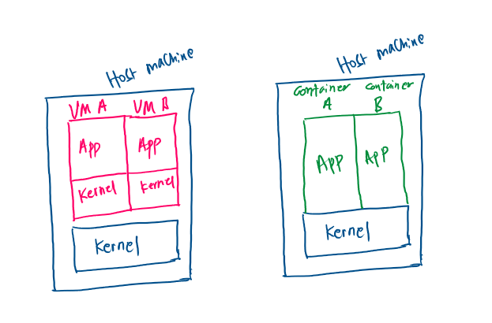

Security: Virtualization and Containerization¶
Author: Sasank Chilamkurthy
Over the last few weeks, we have been working on security of JOHNAIC, an important concern for us. After all, our main pitch is all about privacy, sovereignty and security of your data. So we take security very seriously. In this post, I talk about our learnings with virtualization and containerization.
People have different definitions of what security means to them. Dictionary says
Security (noun): the state of being free from danger or threat.
Where do the threats for a server like JOHNAIC come from? Layman would think that some ‘hacker’ will mess with your system and threaten your applications. However, people don’t realize ‘hacker’ might actually be a user of the system. User could be anyone who accesses services hosted from server: whether that is a HTTP website, database or SSH connection. Therefore ‘hacker’ is just another user.
This brings me to my operational definition of security:
One user of the system should not be able to interfere with another user unless she explicitly gives permission.
Sometimes users might look so legitimate that the free interference of them for other user might feel just fine. But these are the sort of loopholes ‘hackers’ use to bring down the whole or part of the system. This operational definition also bakes in reliability to the system. If a user is able to type in some commands and bring down the whole system, it is obviously interfering with other users.
Does this sound too abstract? Let’s make it concrete with highly relevant example: virtualization/containerization.
Sudo: Bane of Security¶
Linux users, especially developers, should have used sudo at least at one point of their life. Ever wondered what it does?

Linux has a concept called root user who can modify anything with the system. root user is someone who has complete access to everything. They are like God of the system: they can create or delete any file or process - no matter who the owner. With such a great power comes great responsibility. So logging into root user is highly discouraged.

However, many tasks modifying the system requires you to have these root privileges. That’s where sudo, short of super user do comes into picture. When you add sudo before a command, you are asking the system to execute just that command as root. You’ll be able to do this only if you are a admin.
Thus ability to do sudo elevates you to a very powerful and threatening position. Imagine a malicious hacker user getting this access and wreaking havoc on your machine. They can delete your databases, ransom your data and just bring the system down. Its a hackers wet dream!
So fix should be simple right – give no user sudo/root access?. I wish it were that simple. The way Linux distributions like Debian are engineered, you need to sudo to do basics of things. Say you need to download and install a compiler to your machine. Here are the commands you need to execute:
sudo apt-get update
sudo apt-get install gcc
Thus a system without sudo access becomes highly restrictive to developers – most important customer base. How do we solve this problem of giving sudo access to a user but not really? Enter virtualization!
Virtualization¶
Virtualization is when you are able to create an environment that looks like a independent system but really hosted on a physical system. This environment is sometimes called Virtual Machine or VM for short. VMs are a bit recursive – you will be inside a linux system created inside another linux system. Below is a visualization of how it looks like. Note how a linux desktop sits, like an app, inside of another linux desktop.

If properly configured, users in a VM are completely isolated from host users. Even a root user of a VM will be unable to modify anything in the host machine! The virtual machine is a complete Linux system and can do almost whatever they can do in a vanilla system.
Thus, virtualization solves our sudo problems! Instead of giving sudo permissions to a user on the host machine, we create a virtual machine and give sudo permissions on the VM. Of course, this user now becomes God of the VM and thus has heavy responsibility of managing security of his virtual system. However, from the host machine owner perspective, his security can not be compromised by the user of VM.
You might find this whole approach very complicated (and it is), but this is exactly what powered Cloud revolution! Owners of big systems are able to create small slices and give remote access to them without worrying about what they do inside that slice. These owners are the cloud providers like AWS, Azure etc. You might not realize it but you have used a VM when you used cloud!
Containerization: OS Level Virtualization¶
Virtualization, if configured incorrectly, can lead to performance drops because of the virtualization overhead. This happens when we follow the old school approach of install completely different OS inside a host. To understand this a bit better, we need to understand more about operating systems themselves.
Linux is designed to have a strict separation between what is called as kernel space and user space. Kernel abstracts the dark terrifying place that is hardware and provided APIs to interact with it. This abstraction allows users to safely and securely access hardware and get stuff done with it. The API that user space applications use to interact with kernel space abstractions are called system calls.

In old school virtualization, each of the Virtual Machines have their own Kernel. A hypervisor creates virtual hardware and installs a complete operating system on them. This slows down the VM because kernel calls to this virtual hardware have to be translated to the host hardware. Can we get around this and create a simpler and faster alternative?
Turns out yes! We have an abstraction of hardware baked right into the kernel. Why don’t we use that? Enter containers. Containers are sort of like VMs except that kernel is shared between containers and the host system. Permissions are managed by simply translating ids of users between containers and users! This is much simpler translation than that of hardware.

Thus, containers have super low overhead over virtual machines. Sure there are some security concerns over virtual machines but they can be managed if configured well (I am foreshadowing a future post about difference between container engines). Therefore containers have become preferred way of shipping and deploying applications on servers.
There is another nefarious reason to use containers over virtualization for AI applications. You see virtualization requires us to create virtual devices but this is not allowed by GPU drivers from Nvidia etc! The reason they don’t is they want to segment their users and keep virtualization available only to ‘enterprise’ customers. This allows them to take huge markups for their ‘enterprise’ products. Containers allow us to get over this.
Conclusion¶
In this post, we have reviewed my operational definition of security. We have seen how sudo is a necessary offender to this model of security. Virtualization is presented as a way to solve this problem. We then dissected the operating system into kernel space and user space. Containers, alternative to traditional virtual machines (VMs), share the kernel with the host system while VMs do not. This makes container more light weight and preferred alternative.
Published: 27/09/2024